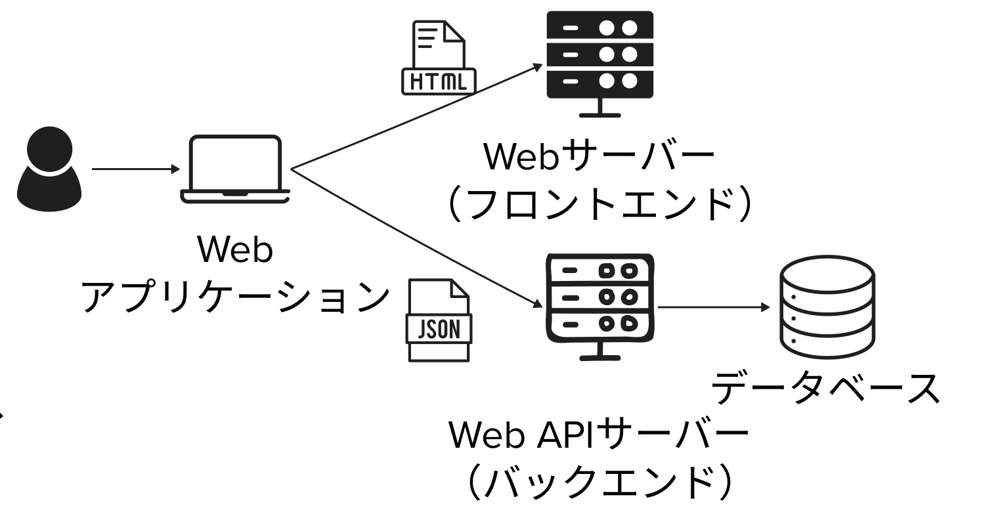

経験から見つける
- うまくいった方法・つまずき・コツ
- 誰に、どんな体験を届けるか
2026年11月6日｜第6回｜プログラミング演習
振り返りから自由制作へ
作る。使ってもらう。
次の改善を見つける。
これまでの経験を、自分の作品につなげよう。

3限100分＋4限100分
第5回で考えたアイデアを出発点に。今日は中間発表の代わりに、アプリを使い合います。
100分×2コマ｜時間は授業開始から・休憩を除く
次にすること：これまでの制作の経験から、次に活かせる気づきを見つけます。
振り返り30分の中で｜最初の5分で3問に別々に投稿
思い通り・思った以上に
何ができましたか？
どのアプリで、何ができたかを具体的に。
ToDoアプリで、PCで追加したタスクをスマホにも表示できた。
【振り返り① できたこと】
アプリ名：
思い通り・思った以上にできたこと：1問につき、1つのメッセージ。
短文でOK。最初の5分で3問に投稿します。
振り返り30分の中で｜最初の5分で3問に別々に投稿
実現したかったことと、
実際の動きはどう違った？
どのアプリで、何がうまくできなかったかを書こう。
チャットアプリで履歴を残したかったが、再読み込みすると会話が消えてしまった。
【振り返り② うまくいかなかったこと】
アプリ名：
実現したかったこと：
実際に起きたこと：1問につき、1つのメッセージ。
短文でOK。最初の5分で3問に投稿します。
振り返り30分の中で｜最初の5分で3問に別々に投稿
どんな工夫が、
開発に役立ちましたか？
指示の出し方・確認・修正の進め方を紹介しよう。
一度に全部直そうとせず、変更を1つずつ頼んで操作を確認すると、問題の原因を見つけやすかった。
【振り返り③ 気づいたコツ】
気づいたコツ：
役立った場面・具体例：1問につき、1つのメッセージ。
短文でOK。最初の5分で3問に投稿します。
100分×2コマ｜時間は授業開始から・休憩を除く
次にすること：制作に使える知識と、AIとの開発の進め方を整理します。
2分｜3限 40〜42分
ワークショップ｜AIへの期待・不安
使ってよかったこと・困ったこと、したいことや疑問を話し合い、発表。
復習：第1回 AI基礎
4分｜3限 42〜46分
例：「学生向けの相談AI。結論を先に、提案は3つ。情報が足りなければ質問して」
4分｜3限 46〜50分
問い：問題が起きるとしたら？ 技術の対策と、使い方のルールを両方考えよう。
復習：第3回 AIの活用と倫理
5分｜3限 50〜55分
不具合の相談：操作手順・期待した結果・実際の結果・エラー表示をセットで。
復習：第4回 アプリ生成①
5分｜3限 55〜60分
問い：自分のアイデアは「入力・表現・データ」のどこを工夫すると面白くなる？
復習：第5回 アプリ生成②
総復習20分の中で｜第5回の復習5分に含む
| 回 | 作ったアプリ | 試したこと |
|---|---|---|
| 第1回 | シューティングゲーム | 自然言語で生成し、遊んで試して改良 |
| 第2回 | AIの役割・出力形式・語り口を調整 | |
| 第3回 | タイピングゲーム | 仕様を対話で整え、生成して試す |
| 第4回 | ポートフォリオ | 自分の作品を紹介する画面を作る |
| 第4回 | タイマー | 時間を計り、操作に応じて表示を変える |
| 第4回 | タスクの保存・同期・ログイン | |
| 第4回 | ログインと会話履歴の保存 | |
| 第5回 | マイクの音をリアルタイムに可視化 | |
| 第5回 | B：音に反応するアプリ | 入力への反応を工夫（例：息で風船が膨らむ） |
| 第5回 | C：外部APIアプリ | 天気・ポケモン図鑑・美術作品紹介などから選択 |
授業で扱った制作内容の一覧です。選択した内容や完成状況は人によって異なります。
100分×2コマ｜時間は授業開始から・休憩を除く
次にすること：提出物と評価の観点を確認します。
最終提出物の説明10分｜3限 60〜70分
これまで作ったアプリの発展でも、新しいアイデアでも構いません。
誰に、どんな体験を届けたいですか？
提出物・評価・日程を確認
| 項目 | 確認すること |
|---|---|
| アプリの説明 |
|
| 主な操作と、その結果がわかる画面録画 | |
| 共有設定と、リンクから開けることを確認 | |
| デプロイリンク（公開URL） | 公開URLから、ほかの人がアクセスして利用できることを確認 |
第7回(11/13) 4限に仮提出。発表後の改善を反映し、11/20までに最終提出します。
ユーザーの操作から、結果が画面に表示されるまで
例にならって、操作から表示までの処理を時系列で記述します。
ユーザー、フロントエンド、バックエンド、認証サービス、データベース、API、AIモデル（LLM）
自分のアプリに合わせて選びましょう。

仕組みを理解するための簡略例です。
ChatGPTの実際の内部構成を示すものではありません。
相対評価のため、各項目の点数は記載しません
| 項目 | 確認すること |
|---|---|
| Firestore | データを保存・読み出し、画面や機能に反映 |
| ログイン・ログアウトと、状態に応じた機能・表示 | |
| いずれかを、アプリの機能や体験に活用 | |
| デプロイ・公開 | 公開URLから、ほかの人がアクセスして利用 |
設定だけでなく、実際の動作を確認。Gemini APIの利用は、開発時のコード生成とは別です。
説明文・処理の流れと、アプリの画面・操作から確認
| 項目 | 確認すること |
|---|---|
| 目的に沿った主な操作を、開始から結果まで実演できる | |
| 説明文から、誰が・どんな場面で使い、何ができるかが伝わる | |
| アプリの処理への理解度 | 処理の流れで、入力から結果が表示されるまでの処理を説明できる |
| アプリ内に利用規約を記載し、AIの限界・入力情報の扱い・禁止事項などを利用者に伝える |
第3回「AIの活用と倫理」で考えたリスクを、今回のアプリの利用規約に反映しよう。
提出物・評価・日程を確認
説明・動画・共有リンク・デプロイリンクをそろえます。
提出先・ファイル名・締切時刻は別途案内。今日のSlack共有と、仮提出・最終提出は別です。
100分×2コマ｜時間は授業開始から・休憩を除く
次にすること：使う人と最初に作る機能を決め、Slackで共有します。
20分｜3限 80〜100分
前回の宿題を見直し、評価観点を踏まえて制作するWebアプリを選びましょう。
【最終課題のアイデア】
誰が、どんな場面で使う？：
アプリで何ができる？：
一番重要な機能は？：
相談したい点（あれば）：4限は一番重要な機能から制作。
100分×2コマ｜時間は授業開始から・休憩を除く
次にすること：主な機能が動く最初の版を作ります。
100分×2コマ｜時間は授業開始から・休憩を除く
次にすること：アプリを使い合い、改善案と次の一歩を残します。
30分｜4限 60〜90分（授業全体 160〜190分）
最初に「誰向けか」「何を試してほしいか」を短く伝えます。
人数が奇数なら1組を3人に。交代も含めて進めます。
相互体験30分の中でフィードバック
「献立を提案するときに、調理に使える時間も選べると、忙しい日でも作れる料理を見つけやすそう」
使ったときの具体的な場面と、改善のアイデアを伝えましょう。
5分｜4限 90〜95分（授業全体 190〜195分）
Slackに新しいメッセージとして投稿します。
現時点でできているアプリの操作動画を添え、今日できたことと、これから反映したいことを投稿しましょう。
【中間成果物】
現時点でできているアプリの操作動画を添付
今日できたこと：
これから反映したいこと：